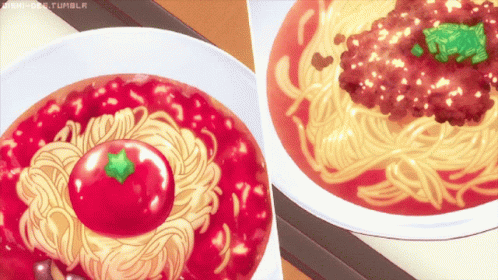

Spaghetti

Spaghetti and meatballs is an Italian-American dish
consisting of spaghetti, tomato sauce and meatballs.
Ingredients for meatballs
- 2/3 cup of cold water
- 1 lb lean ground beef, (7%-15% fat)
- 1 lb Ground Italian sausage (Casings removed)
- 1/4 cup grated parmesan cheese
- 4 cloves garlic, minced
- 1 tsp sea salt
- 1/2 tsp black pepper
- 1 large egg
- 3/4 cup all-purpose flour, to dredge meatballs
- 3 Tbsp light olive oil to saute, or use vegetable oil
Ingredients for sauce
- 1 medium yellow onion (1 cup chopped)
- 4 cloves garlic, minced
- 56oz crushed tomatoes, (from 2 - 28 oz cans)
- 2 bay leaves, optional
- Salt and pepper, to taste
- 2 Tbsp basil, finely minced